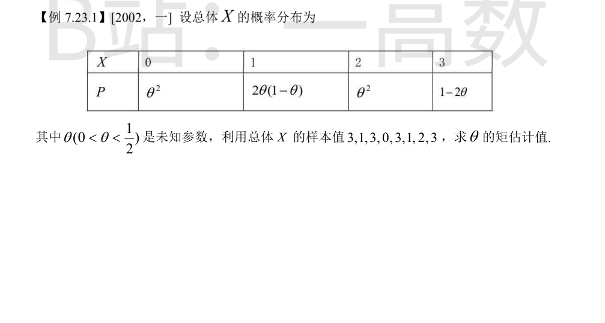
先求总体一阶矩：
$$E(X)=0\cdot\theta^2+1\cdot 2\theta(1-\theta)+2\cdot\theta^2+3\cdot(1-2\theta)=2\theta-2\theta^2+2\theta^2+3-6\theta=3-4\theta$$
样本均值：
$$\bar{x}=\frac{3+1+3+0+3+1+2+3}{8}=\frac{16}{8}=2$$
令 $E(X)=\bar{x}$，即 $3-4\theta=2$，解得 $\theta=\frac{1}{4}\in\left(0,\frac{1}{2}\right)$，故矩估计值 $\hat{\theta}=\frac{1}{4}$。
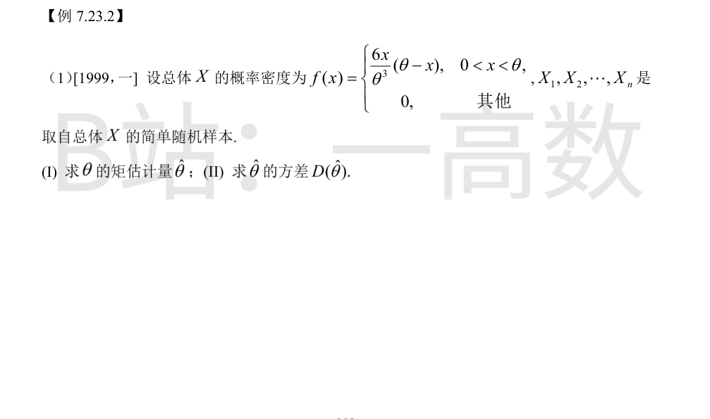
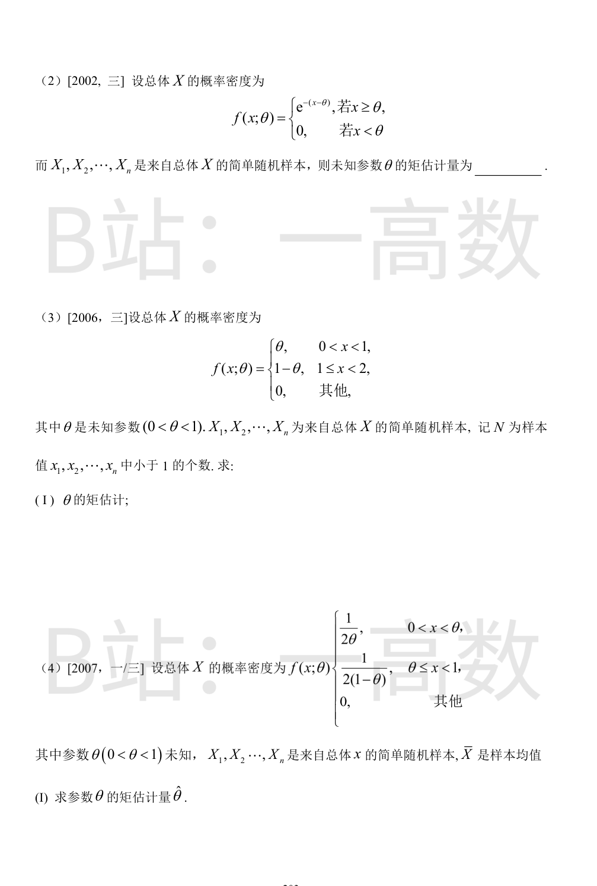
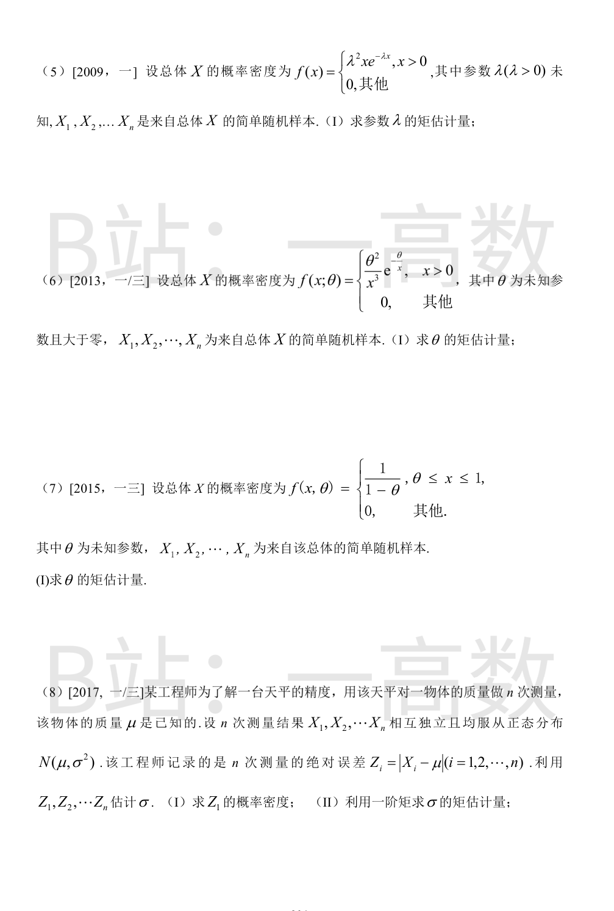
(I)
$$E(X)=\int_0^{\theta}x\cdot\frac{6x}{\theta^3}(\theta-x)\,dx=\frac{6}{\theta^3}\int_0^{\theta}(\theta x^2-x^3)\,dx=\frac{6}{\theta^3}\left(\frac{\theta^4}{3}-\frac{\theta^4}{4}\right)=\frac{6}{\theta^3}\cdot\frac{\theta^4}{12}=\frac{\theta}{2}$$
令 $E(X)=\bar{X}$，得 $\frac{\theta}{2}=\bar{X}$，故 $\hat{\theta}=2\bar{X}$。
(II) 先求二阶矩：
$$E(X^2)=\int_0^{\theta}\frac{6x^3}{\theta^3}(\theta-x)\,dx=\frac{6}{\theta^3}\left(\theta\cdot\frac{\theta^4}{4}-\frac{\theta^5}{5}\right)=\frac{6}{\theta^3}\cdot\frac{\theta^5}{20}=\frac{3\theta^2}{10}$$
$$D(X)=\frac{3\theta^2}{10}-\left(\frac{\theta}{2}\right)^2=\frac{6\theta^2-5\theta^2}{20}=\frac{\theta^2}{20}$$
由样本的独立性与 $D(cY)=c^2D(Y)$：
$$D(\hat{\theta})=D(2\bar{X})=\frac{4}{n}D(X)=\frac{4}{n}\cdot\frac{\theta^2}{20}=\frac{\theta^2}{5n}$$
$$E(X)=\int_{\theta}^{+\infty}x\,e^{-(x-\theta)}\,dx$$
令 $t=x-\theta$：
$$E(X)=\int_0^{+\infty}(t+\theta)e^{-t}\,dt=\int_0^{+\infty}te^{-t}dt+\theta\int_0^{+\infty}e^{-t}dt=1+\theta$$
令 $E(X)=\bar{X}$，即 $1+\theta=\bar{X}$，解得 $\hat{\theta}=\bar{X}-1$。
$$E(X)=\int_0^1 x\theta\,dx+\int_1^2 x(1-\theta)\,dx=\frac{\theta}{2}+(1-\theta)\cdot\frac{2^2-1^2}{2}=\frac{\theta}{2}+\frac{3(1-\theta)}{2}=\frac{3}{2}-\theta$$
令 $E(X)=\bar{X}$，即 $\frac{3}{2}-\theta=\bar{X}$，解得 $\hat{\theta}=\frac{3}{2}-\bar{X}$。
$$E(X)=\int_0^{\theta}\frac{x}{2\theta}dx+\int_{\theta}^1\frac{x}{2(1-\theta)}dx=\frac{\theta}{4}+\frac{1-\theta^2}{4(1-\theta)}=\frac{\theta}{4}+\frac{1+\theta}{4}=\frac{2\theta+1}{4}$$
令 $E(X)=\bar{X}$：$\frac{2\theta+1}{4}=\bar{X}$，解得 $\hat{\theta}=2\bar{X}-\frac{1}{2}$。
$$E(X)=\int_0^{+\infty}x\cdot\lambda^2 xe^{-\lambda x}dx=\lambda^2\int_0^{+\infty}x^2e^{-\lambda x}dx=\lambda^2\cdot\frac{\Gamma(3)}{\lambda^3}=\lambda^2\cdot\frac{2}{\lambda^3}=\frac{2}{\lambda}$$
令 $\frac{2}{\lambda}=\bar{X}$，解得 $\hat{\lambda}=\frac{2}{\bar{X}}$。
$$E(X)=\int_0^{+\infty}x\cdot\frac{\theta^2}{x^3}e^{-\frac{\theta}{x}}dx=\int_0^{+\infty}\frac{\theta^2}{x^2}e^{-\frac{\theta}{x}}dx$$
令 $t=\frac{\theta}{x}$，则 $x=\frac{\theta}{t}$，$dx=-\frac{\theta}{t^2}dt$：
$$E(X)=\int_{+\infty}^{0}t^2e^{-t}\left(-\frac{\theta}{t^2}\right)dt=\theta\int_0^{+\infty}e^{-t}dt=\theta$$
令 $E(X)=\bar{X}$，故 $\hat{\theta}=\bar{X}$。
$$E(X)=\int_{\theta}^1\frac{x}{1-\theta}dx=\frac{1-\theta^2}{2(1-\theta)}=\frac{1+\theta}{2}$$
令 $\frac{1+\theta}{2}=\bar{X}$，解得 $\hat{\theta}=2\bar{X}-1$。
(I) $X_1-\mu\sim N(0,\sigma^2)$。对 $z\ge 0$：
$$F_Z(z)=P\{|X_1-\mu|\le z\}=P\{-z\le X_1-\mu\le z\}=2\Phi\left(\frac{z}{\sigma}\right)-1$$
求导得
$$f_Z(z)=\frac{2}{\sigma}\varphi\left(\frac{z}{\sigma}\right)=\sqrt{\frac{2}{\pi}}\cdot\frac{1}{\sigma}e^{-\frac{z^2}{2\sigma^2}},\quad z>0;\qquad f_Z(z)=0,\ z\le 0$$
(II)
$$E(Z_1)=\int_0^{+\infty}z\sqrt{\frac{2}{\pi}}\cdot\frac{1}{\sigma}e^{-\frac{z^2}{2\sigma^2}}dz=\sqrt{\frac{2}{\pi}}\cdot\frac{1}{\sigma}\cdot\sigma^2=\sqrt{\frac{2}{\pi}}\,\sigma$$
（其中 $\int_0^{+\infty}ze^{-\frac{z^2}{2\sigma^2}}dz=\sigma^2$。）令 $E(Z_1)=\bar{Z}=\frac{1}{n}\sum_{i=1}^n|X_i-\mu|$，解得
$$\hat{\sigma}=\sqrt{\frac{\pi}{2}}\,\bar{Z}=\sqrt{\frac{\pi}{2}}\cdot\frac{1}{n}\sum_{i=1}^n|X_i-\mu|$$
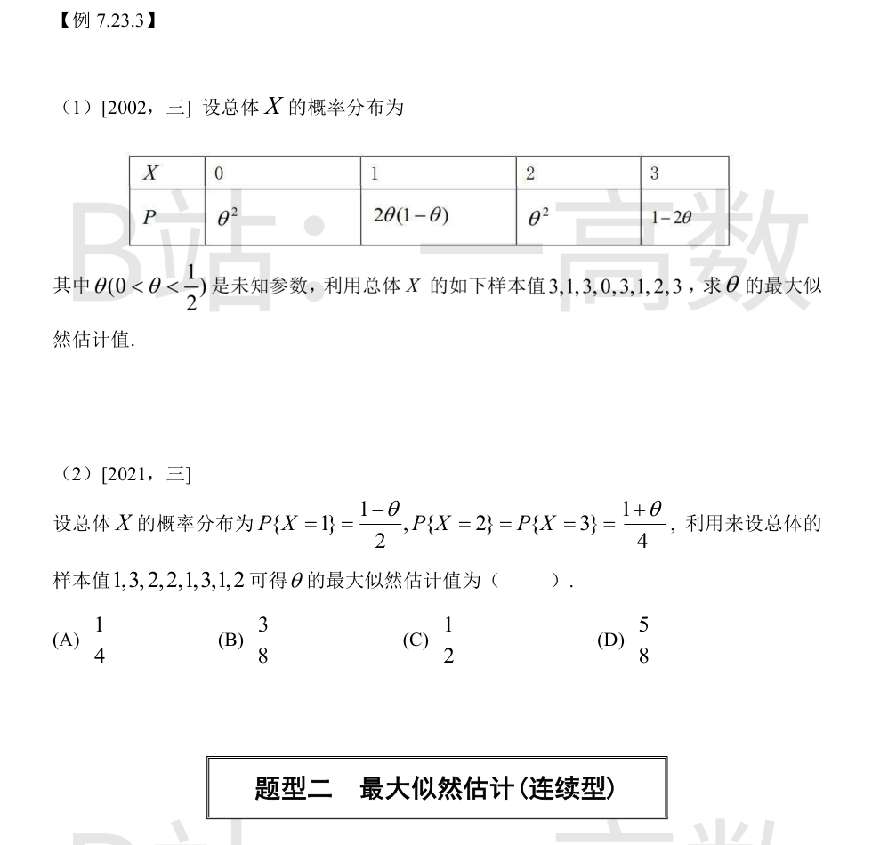
样本值中 0 出现 1 次、1 出现 2 次、2 出现 1 次、3 出现 4 次，似然函数：
$$L(\theta)=\left(\theta^2\right)^1\left[2\theta(1-\theta)\right]^2\left(\theta^2\right)^1(1-2\theta)^4=4\theta^6(1-\theta)^2(1-2\theta)^4$$
$$\ln L=\ln 4+6\ln\theta+2\ln(1-\theta)+4\ln(1-2\theta)$$
$$\frac{d\ln L}{d\theta}=\frac{6}{\theta}-\frac{2}{1-\theta}-\frac{8}{1-2\theta}=0$$
通分并乘 $\theta(1-\theta)(1-2\theta)$：
$$6(1-\theta)(1-2\theta)-2\theta(1-2\theta)-8\theta(1-\theta)=0$$
展开：$6-18\theta+12\theta^2-2\theta+4\theta^2-8\theta+8\theta^2=0$，即 $24\theta^2-28\theta+6=0$，约简为 $12\theta^2-14\theta+3=0$。
$$\theta=\frac{14\pm\sqrt{196-144}}{24}=\frac{7\pm\sqrt{13}}{12}$$
$\frac{7+\sqrt{13}}{12}\approx 0.884>\frac{1}{2}$ 舍去；$\frac{7-\sqrt{13}}{12}\approx 0.283\in\left(0,\frac{1}{2}\right)$，故 $\hat{\theta}=\frac{7-\sqrt{13}}{12}$。
【仲裁修正】独立校验发现分歧，经仲裁重解，以本答案为准：B 似然指数写错：L 应为 4θ^6(1−θ)^2(1−2θ)^4（θ² 概率各出现一次，2θ(1−θ) 出现两次），B 写成 θ^8 导致方程 14θ^2−17θ+4=0 及错误根 (17−√65)/28；正确方程为 12θ^2−14θ+3=0
样本值中 1 出现 3 次、2 出现 3 次、3 出现 2 次：
$$L(\theta)=\left(\frac{1-\theta}{2}\right)^3\left(\frac{1+\theta}{4}\right)^3\left(\frac{1+\theta}{4}\right)^2=\frac{(1-\theta)^3(1+\theta)^5}{2^3\cdot 4^5}$$
$$\ln L=3\ln(1-\theta)+5\ln(1+\theta)+C,\qquad \frac{d\ln L}{d\theta}=\frac{-3}{1-\theta}+\frac{5}{1+\theta}=0$$
$5(1-\theta)=3(1+\theta)\Rightarrow 8\theta=2\Rightarrow\hat{\theta}=\frac{1}{4}$。故选 (A)。
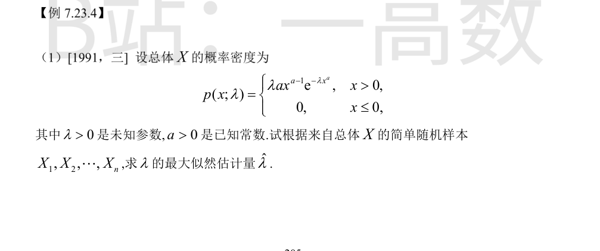
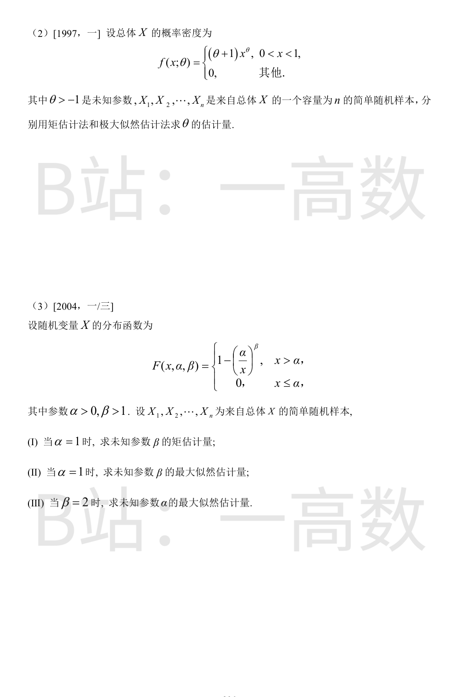
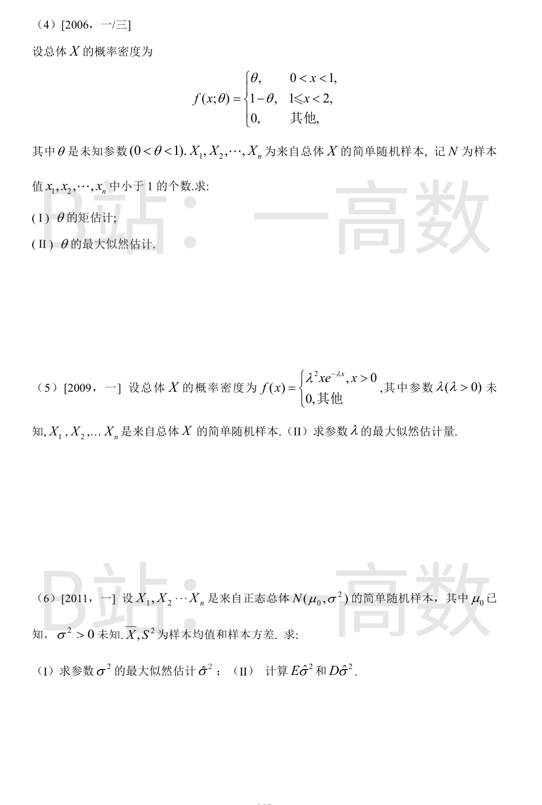
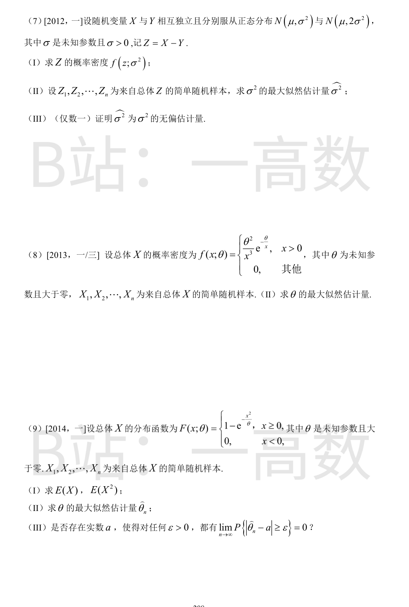
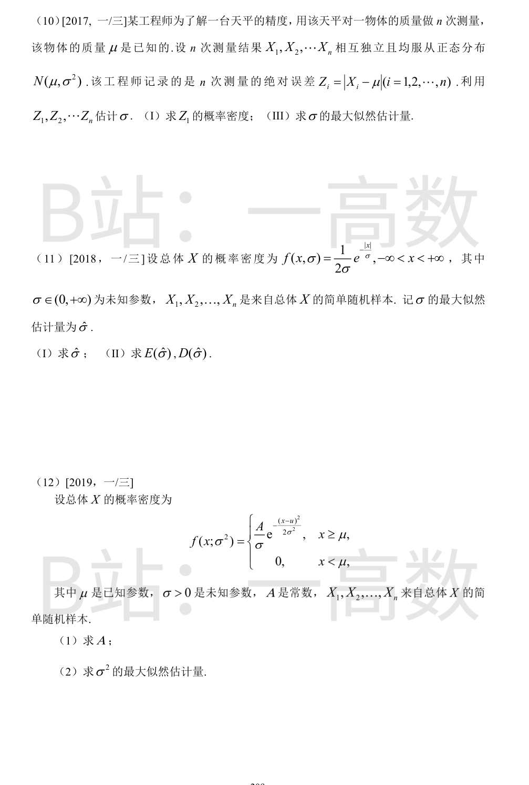
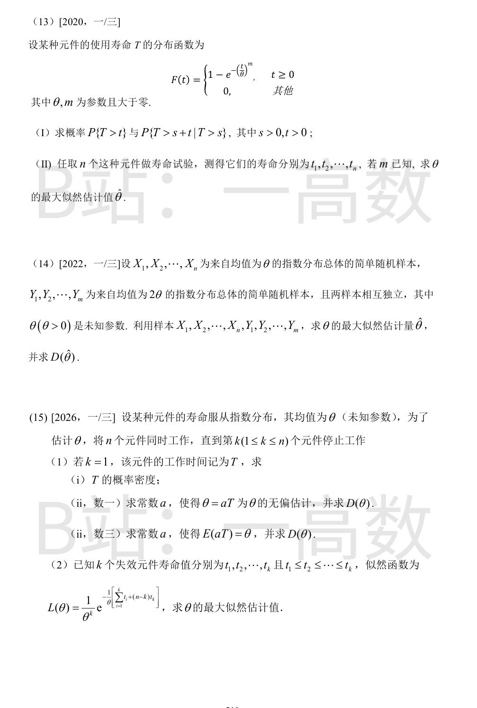
$$L(\lambda)=\prod_{i=1}^n\lambda a\, x_i^{a-1}e^{-\lambda x_i^a}=(\lambda a)^n\left(\prod_{i=1}^n x_i\right)^{a-1}e^{-\lambda\sum_{i=1}^n x_i^a}$$
$$\ln L=n\ln\lambda+n\ln a+(a-1)\sum_{i=1}^n\ln x_i-\lambda\sum_{i=1}^n x_i^a$$
$$\frac{d\ln L}{d\lambda}=\frac{n}{\lambda}-\sum_{i=1}^n x_i^a=0\ \Rightarrow\ \hat{\lambda}=\frac{n}{\sum_{i=1}^n X_i^a}$$
矩估计：
$$E(X)=\int_0^1 x(\theta+1)x^{\theta}dx=(\theta+1)\int_0^1 x^{\theta+1}dx=\frac{\theta+1}{\theta+2}$$
令 $\frac{\theta+1}{\theta+2}=\bar{X}$：$\bar{X}(\theta+2)=\theta+1\Rightarrow\theta(\bar{X}-1)=1-2\bar{X}$，得
$$\hat{\theta}_{矩}=\frac{2\bar{X}-1}{1-\bar{X}}$$
最大似然：$L(\theta)=(\theta+1)^n\left(\prod_{i=1}^n x_i\right)^{\theta}$（$0<x_i<1$），
$$\ln L=n\ln(\theta+1)+\theta\sum_{i=1}^n\ln x_i,\qquad \frac{d\ln L}{d\theta}=\frac{n}{\theta+1}+\sum_{i=1}^n\ln x_i=0$$
$$\hat{\theta}_{MLE}=-\frac{n}{\sum_{i=1}^n\ln X_i}$$
【仲裁修正】独立校验发现分歧，经仲裁重解，以本答案为准：B 矩估计反解错误：由 (θ+1)/(θ+2)=X̄ 应解得 θ̂=(2X̄−1)/(1−X̄)，B 直接写成 θ̂=2X̄−1；MLE 三方一致
密度：$f(x;\alpha,\beta)=\beta\alpha^{\beta}x^{-\beta-1}$（$x>\alpha$），其余为 0。
(I) $\alpha=1$：$f(x;\beta)=\beta x^{-\beta-1}$（$x>1$）。
$$E(X)=\int_1^{+\infty}x\cdot\beta x^{-\beta-1}dx=\beta\int_1^{+\infty}x^{-\beta}dx=\beta\cdot\frac{1}{\beta-1}=\frac{\beta}{\beta-1}$$
令 $\frac{\beta}{\beta-1}=\bar{X}$：$\bar{X}(\beta-1)=\beta\Rightarrow\beta(\bar{X}-1)=\bar{X}$，得 $\hat{\beta}=\frac{\bar{X}}{\bar{X}-1}$。
(II) $\alpha=1$：$L(\beta)=\beta^n\left(\prod x_i\right)^{-\beta-1}$（要求 $x_i>1$），
$$\ln L=n\ln\beta-(\beta+1)\sum_{i=1}^n\ln x_i,\qquad \frac{d\ln L}{d\beta}=\frac{n}{\beta}-\sum_{i=1}^n\ln x_i=0$$
得 $\hat{\beta}=\frac{n}{\sum_{i=1}^n\ln X_i}$。
(III) $\beta=2$：$f(x;\alpha)=2\alpha^2x^{-3}$（$x>\alpha$），
$$L(\alpha)=2^n\alpha^{2n}\left(\prod x_i\right)^{-3},\qquad \alpha\le\min\{x_1,\dots,x_n\}$$
$L(\alpha)$ 关于 $\alpha$ 严格单调增加，故在定义域上界处取最大：$\hat{\alpha}=\min\{X_1,\dots,X_n\}$。
(I) $$E(X)=\int_0^1 x\theta\,dx+\int_1^2 x(1-\theta)dx=\frac{\theta}{2}+\frac{3(1-\theta)}{2}=\frac{3}{2}-\theta$$
令 $E(X)=\bar{X}$，得 $\hat{\theta}=\frac{3}{2}-\bar{X}$。
(II) 每个样本值小于 1 的概率为 $\theta$，不小于 1 的概率为 $1-\theta$，且样本独立，故
$$L(\theta)=\theta^N(1-\theta)^{n-N}$$
$$\ln L=N\ln\theta+(n-N)\ln(1-\theta),\qquad \frac{d\ln L}{d\theta}=\frac{N}{\theta}-\frac{n-N}{1-\theta}=0$$
$N(1-\theta)=(n-N)\theta\Rightarrow N=n\theta$，故 $\hat{\theta}=\frac{N}{n}$。
$$L(\lambda)=\prod_{i=1}^n\lambda^2 x_ie^{-\lambda x_i}=\lambda^{2n}\left(\prod_{i=1}^n x_i\right)e^{-\lambda\sum_{i=1}^n x_i}$$
$$\ln L=2n\ln\lambda+\sum_{i=1}^n\ln x_i-\lambda\sum_{i=1}^n x_i$$
$$\frac{d\ln L}{d\lambda}=\frac{2n}{\lambda}-\sum_{i=1}^n x_i=0\ \Rightarrow\ \hat{\lambda}=\frac{2n}{\sum_{i=1}^n X_i}=\frac{2}{\bar{X}}$$
(I)
$$L(\sigma^2)=\left(\frac{1}{\sqrt{2\pi\sigma^2}}\right)^n e^{-\frac{1}{2\sigma^2}\sum_{i=1}^n(x_i-\mu_0)^2}$$
$$\ln L=-\frac{n}{2}\ln(2\pi\sigma^2)-\frac{1}{2\sigma^2}\sum_{i=1}^n(x_i-\mu_0)^2$$
令 $u=\sigma^2$，$\frac{d\ln L}{du}=-\frac{n}{2u}+\frac{\sum(x_i-\mu_0)^2}{2u^2}=0$，得
$$\hat{\sigma}^2=\frac{1}{n}\sum_{i=1}^n(X_i-\mu_0)^2$$
(II) $E\left[(X_i-\mu_0)^2\right]=D(X_i)=\sigma^2$，故 $E(\hat{\sigma}^2)=\frac{1}{n}\cdot n\sigma^2=\sigma^2$。
又因 $\mu_0$ 已知，$\frac{\sum_{i=1}^n(X_i-\mu_0)^2}{\sigma^2}\sim\chi^2(n)$，于是
$$D(\hat{\sigma}^2)=\frac{\sigma^4}{n^2}D\left(\chi^2(n)\right)=\frac{\sigma^4}{n^2}\cdot 2n=\frac{2\sigma^4}{n}$$
(I) $Z=X-Y\sim N(0,\ \sigma^2+2\sigma^2)=N(0,3\sigma^2)$，故
$$f(z;\sigma^2)=\frac{1}{\sqrt{2\pi}\cdot\sqrt{3}\,\sigma}e^{-\frac{z^2}{2\cdot 3\sigma^2}}=\frac{1}{\sqrt{6\pi}\,\sigma}e^{-\frac{z^2}{6\sigma^2}},\quad -\infty<z<+\infty$$
(II)
$$L(\sigma^2)=\prod_{i=1}^n\frac{1}{\sqrt{6\pi\sigma^2}}e^{-\frac{z_i^2}{6\sigma^2}}=(6\pi\sigma^2)^{-n/2}e^{-\frac{1}{6\sigma^2}\sum_{i=1}^n z_i^2}$$
$$\ln L=-\frac{n}{2}\ln(6\pi\sigma^2)-\frac{\sum z_i^2}{6\sigma^2}$$
令 $u=\sigma^2$：$\frac{d\ln L}{du}=-\frac{n}{2u}+\frac{\sum z_i^2}{6u^2}=0$，得 $\hat{\sigma}^2=\frac{1}{3n}\sum_{i=1}^n Z_i^2$。
(III) $E(Z_i)=0$，$D(Z_i)=3\sigma^2$，故 $E(Z_i^2)=D(Z_i)+[E(Z_i)]^2=3\sigma^2$，从而
$$E(\hat{\sigma}^2)=\frac{1}{3n}\sum_{i=1}^n E(Z_i^2)=\frac{1}{3n}\cdot 3n\sigma^2=\sigma^2$$
即 $\hat{\sigma}^2$ 为 $\sigma^2$ 的无偏估计量。证毕。
$$L(\theta)=\prod_{i=1}^n\frac{\theta^2}{x_i^3}e^{-\frac{\theta}{x_i}}=\theta^{2n}\left(\prod_{i=1}^n x_i\right)^{-3}e^{-\theta\sum_{i=1}^n\frac{1}{x_i}}$$
$$\ln L=2n\ln\theta-3\sum_{i=1}^n\ln x_i-\theta\sum_{i=1}^n\frac{1}{x_i}$$
$$\frac{d\ln L}{d\theta}=\frac{2n}{\theta}-\sum_{i=1}^n\frac{1}{x_i}=0\ \Rightarrow\ \hat{\theta}=\frac{2n}{\sum_{i=1}^n\frac{1}{X_i}}$$
(I) $f(x;\theta)=F'(x)=\frac{2x}{\theta}e^{-\frac{x^2}{\theta}}$（$x>0$）。
对 $E(X)$ 令 $u=\frac{x^2}{\theta}$，则 $x=\sqrt{\theta u}$，$dx=\frac{\sqrt{\theta}}{2\sqrt{u}}du$：
$$E(X)=\int_0^{+\infty}x\cdot\frac{2x}{\theta}e^{-\frac{x^2}{\theta}}dx=\int_0^{+\infty}\theta u\cdot\frac{2}{\theta}e^{-u}\cdot\frac{\sqrt{\theta}}{2\sqrt{u}}du=\sqrt{\theta}\int_0^{+\infty}u^{1/2}e^{-u}du=\sqrt{\theta}\,\Gamma\left(\frac{3}{2}\right)=\frac{\sqrt{\pi\theta}}{2}$$
对 $E(X^2)$ 用 $2x\,dx=\theta\,du$：
$$E(X^2)=\int_0^{+\infty}x^2\cdot\frac{2x}{\theta}e^{-\frac{x^2}{\theta}}dx=\frac{1}{\theta}\int_0^{+\infty}\theta u\cdot\theta e^{-u}du=\theta\int_0^{+\infty}ue^{-u}du=\theta$$
(II)
$$L(\theta)=\left(\frac{2}{\theta}\right)^n\left(\prod x_i\right)e^{-\frac{1}{\theta}\sum x_i^2},\qquad \ln L=C-n\ln\theta-\frac{1}{\theta}\sum_{i=1}^n x_i^2$$
$$\frac{d\ln L}{d\theta}=-\frac{n}{\theta}+\frac{\sum x_i^2}{\theta^2}=0\ \Rightarrow\ \hat{\theta}_n=\frac{1}{n}\sum_{i=1}^n X_i^2$$
(III) $X_1^2,\dots,X_n^2$ 独立同分布且 $E(X_i^2)=\theta<\infty$，由辛钦大数定律
$$\hat{\theta}_n=\frac{1}{n}\sum_{i=1}^n X_i^2\xrightarrow{P}\theta$$
即对任意 $\varepsilon>0$，$\lim_{n\to\infty}P\left\{|\hat{\theta}_n-\theta|\ge\varepsilon\right\}=0$。故存在 $a=\theta$。
(I) 与 7.23.2(8) 相同：$F_Z(z)=2\Phi\left(\frac{z}{\sigma}\right)-1$（$z\ge 0$），求导得
$$f_{Z_1}(z)=\sqrt{\frac{2}{\pi}}\cdot\frac{1}{\sigma}e^{-\frac{z^2}{2\sigma^2}},\ z>0;\qquad f_{Z_1}(z)=0,\ z\le 0$$
(III)
$$L(\sigma)=\left(\frac{1}{\sigma}\sqrt{\frac{2}{\pi}}\right)^n e^{-\frac{1}{2\sigma^2}\sum_{i=1}^n z_i^2}$$
$$\ln L=n\ln\sqrt{\frac{2}{\pi}}-n\ln\sigma-\frac{1}{2\sigma^2}\sum_{i=1}^n z_i^2$$
$$\frac{d\ln L}{d\sigma}=-\frac{n}{\sigma}+\frac{\sum z_i^2}{\sigma^3}=0\ \Rightarrow\ \hat{\sigma}^2=\frac{1}{n}\sum_{i=1}^n z_i^2,\quad \hat{\sigma}=\sqrt{\frac{1}{n}\sum_{i=1}^n(X_i-\mu)^2}$$
(I)
$$L(\sigma)=\prod_{i=1}^n\frac{1}{2\sigma}e^{-\frac{|x_i|}{\sigma}}=(2\sigma)^{-n}e^{-\frac{1}{\sigma}\sum_{i=1}^n|x_i|}$$
$$\ln L=-n\ln(2\sigma)-\frac{1}{\sigma}\sum_{i=1}^n|x_i|,\qquad \frac{d\ln L}{d\sigma}=-\frac{n}{\sigma}+\frac{\sum|x_i|}{\sigma^2}=0$$
$$\hat{\sigma}=\frac{1}{n}\sum_{i=1}^n|X_i|$$
(II)
$$E(|X|)=\int_{-\infty}^{+\infty}|x|\cdot\frac{1}{2\sigma}e^{-\frac{|x|}{\sigma}}dx=\int_0^{+\infty}\frac{x}{\sigma}e^{-\frac{x}{\sigma}}dx=\sigma$$
故 $E(\hat{\sigma})=\frac{1}{n}\sum E(|X_i|)=\sigma$（无偏）。
$$E(X^2)=\int_0^{+\infty}\frac{x^2}{\sigma}e^{-\frac{x}{\sigma}}dx=2\sigma^2\ \Rightarrow\ D(|X|)=E(X^2)-[E(|X|)]^2=2\sigma^2-\sigma^2=\sigma^2$$
$$D(\hat{\sigma})=\frac{1}{n^2}\sum D(|X_i|)=\frac{\sigma^2}{n}$$
(1) 由概率密度的归一性 $\int_{\mu}^{+\infty}\frac{A}{\sigma}e^{-\frac{(x-\mu)^2}{2\sigma^2}}dx=1$，令 $t=\frac{x-\mu}{\sigma}$：
$$A\int_0^{+\infty}e^{-\frac{t^2}{2}}dt=A\cdot\frac{\sqrt{2\pi}}{2}=A\sqrt{\frac{\pi}{2}}=1\ \Rightarrow\ A=\sqrt{\frac{2}{\pi}}$$
(2)
$$L=\left(\frac{A}{\sigma}\right)^n e^{-\frac{1}{2\sigma^2}\sum_{i=1}^n(x_i-\mu)^2},\qquad \ln L=n\ln A-n\ln\sigma-\frac{1}{2\sigma^2}\sum(x_i-\mu)^2$$
令 $u=\sigma^2$：$\frac{d\ln L}{du}=-\frac{n}{2u}+\frac{\sum(x_i-\mu)^2}{2u^2}=0$，得
$$\hat{\sigma}^2=\frac{1}{n}\sum_{i=1}^n(X_i-\mu)^2$$
(I) $P\{T>t\}=1-F(t)=e^{-\left(\frac{t}{\theta}\right)^m}$。
$$P\{T>s+t|T>s\}=\frac{P\{T>s+t\}}{P\{T>s\}}=\frac{e^{-\left(\frac{s+t}{\theta}\right)^m}}{e^{-\left(\frac{s}{\theta}\right)^m}}=e^{-\frac{(s+t)^m-s^m}{\theta^m}}$$
(II) $f(t;\theta)=F'(t)=\frac{m}{\theta}\left(\frac{t}{\theta}\right)^{m-1}e^{-\left(\frac{t}{\theta}\right)^m}=\frac{m}{\theta^m}t^{m-1}e^{-\frac{t^m}{\theta^m}}$（$t\ge 0$）。
$$L(\theta)=\frac{m^n}{\theta^{mn}}\left(\prod_{i=1}^n t_i\right)^{m-1}e^{-\frac{1}{\theta^m}\sum_{i=1}^n t_i^m}$$
$$\ln L=n\ln m+(m-1)\sum\ln t_i-mn\ln\theta-\frac{\sum t_i^m}{\theta^m}$$
$$\frac{d\ln L}{d\theta}=-\frac{mn}{\theta}+\frac{m\sum t_i^m}{\theta^{m+1}}=0\ \Rightarrow\ \theta^m=\frac{1}{n}\sum_{i=1}^n t_i^m$$
$$\hat{\theta}=\left(\frac{1}{n}\sum_{i=1}^n t_i^m\right)^{1/m}$$
密度：$f_X(x)=\frac{1}{\theta}e^{-\frac{x}{\theta}}$（$x>0$），$f_Y(y)=\frac{1}{2\theta}e^{-\frac{y}{2\theta}}$（$y>0$）。
$$L(\theta)=\theta^{-n}e^{-\frac{\sum x_i}{\theta}}(2\theta)^{-m}e^{-\frac{\sum y_j}{2\theta}}$$
$$\ln L=-(n+m)\ln\theta-m\ln 2-\frac{\sum x_i}{\theta}-\frac{\sum y_j}{2\theta}$$
$$\frac{d\ln L}{d\theta}=-\frac{n+m}{\theta}+\frac{\sum x_i}{\theta^2}+\frac{\sum y_j}{2\theta^2}=0$$
两边乘 $\theta^2$：$(n+m)\theta=\sum_{i=1}^n x_i+\frac{1}{2}\sum_{j=1}^m y_j$，故
$$\hat{\theta}=\frac{\sum_{i=1}^n X_i+\frac{1}{2}\sum_{j=1}^m Y_j}{n+m}$$
求方差：$D(X_i)=\theta^2$，$D\left(\frac{Y_j}{2}\right)=\frac{1}{4}\cdot D(Y_j)=\frac{1}{4}\cdot(2\theta)^2=\theta^2$，且所有变量相互独立，故
$$D(\hat{\theta})=\frac{n\theta^2+m\theta^2}{(n+m)^2}=\frac{\theta^2}{n+m}$$
(1) 各元件寿命 $X_1,\dots,X_n$ 独立同服从均值为 $\theta$ 的指数分布。$k=1$ 时 $T=\min\{X_1,\dots,X_n\}$，
$$F_T(t)=P\{\min X_i\le t\}=1-P\{X_1>t,\dots,X_n>t\}=1-e^{-\frac{nt}{\theta}}$$
(i) $$f_T(t)=\frac{n}{\theta}e^{-\frac{nt}{\theta}},\quad t>0$$
(ii) $E(T)=\frac{\theta}{n}$，令 $E(aT)=\frac{a\theta}{n}=\theta$ 得 $a=n$，即 $\hat{\theta}=nT$。
$$D(\hat{\theta})=D(nT)=n^2D(T)=n^2\cdot\frac{\theta^2}{n^2}=\theta^2$$
（数一问「$\theta=aT$ 为无偏估计」与数三问「$E(aT)=\theta$」条件相同，答案均为 $a=n$，$D(\hat{\theta})=\theta^2$。）
(2)
$$\ln L=-k\ln\theta-\frac{1}{\theta}\left[\sum_{i=1}^k t_i+(n-k)t_k\right]$$
$$\frac{d\ln L}{d\theta}=-\frac{k}{\theta}+\frac{\sum_{i=1}^k t_i+(n-k)t_k}{\theta^2}=0$$
$$\hat{\theta}=\frac{1}{k}\left[\sum_{i=1}^k t_i+(n-k)t_k\right]$$
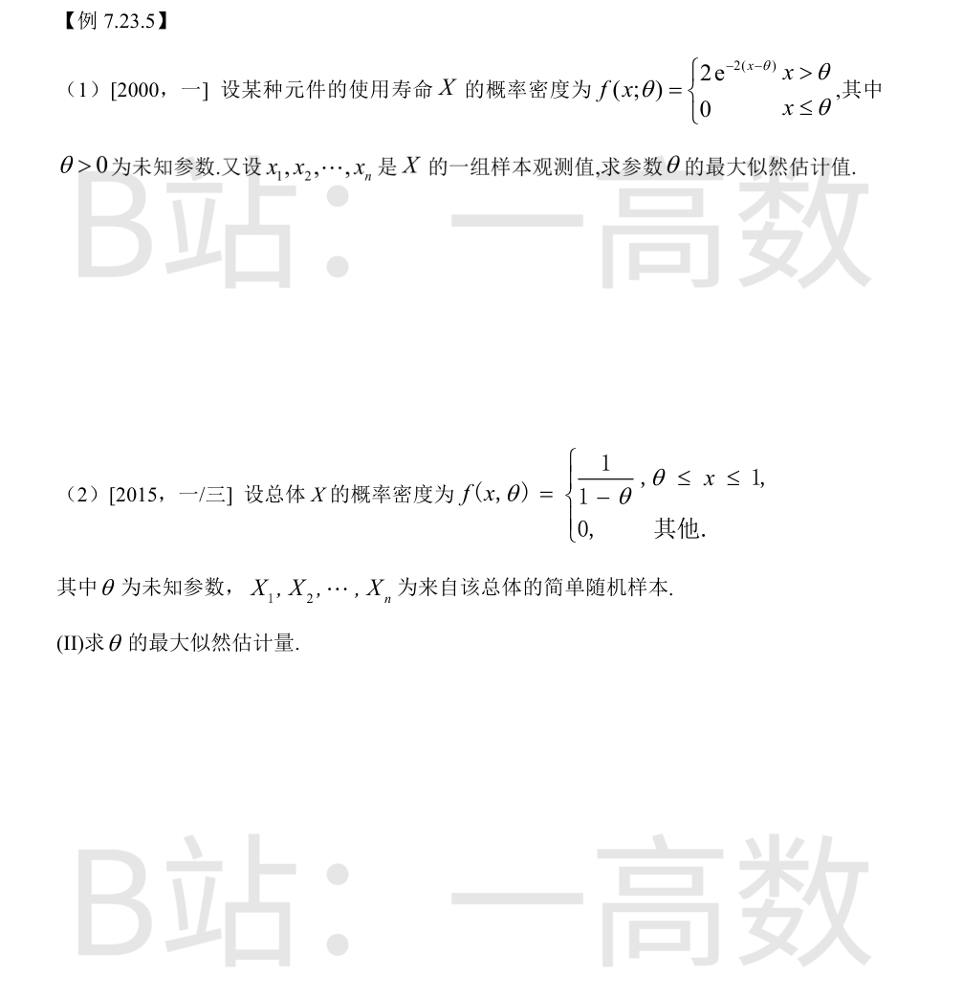
$$L(\theta)=\prod_{i=1}^n 2e^{-2(x_i-\theta)}=2^n e^{-2\sum x_i+2n\theta},\qquad \theta\le x_1,\dots,x_n$$
$\ln L=n\ln 2-2\sum x_i+2n\theta$ 关于 $\theta$ 严格单调增加，故 $\theta$ 越大 $L$ 越大；而定义域要求 $\theta\le\min\{x_i\}$，故 $\theta$ 取上界时似然最大：
$$\hat{\theta}=\min\{x_1,\dots,x_n\}$$
$$L(\theta)=(1-\theta)^{-n},\qquad \theta\le x_i\le 1\ (i=1,\dots,n)$$
$$\frac{d\ln L}{d\theta}=\frac{n}{1-\theta}>0$$
$L(\theta)$ 关于 $\theta$ 单调增加，$\theta$ 应尽量小；定义域要求 $\theta\le\min\{x_i\}$，故
$$\hat{\theta}=\min\{X_1,\dots,X_n\}$$